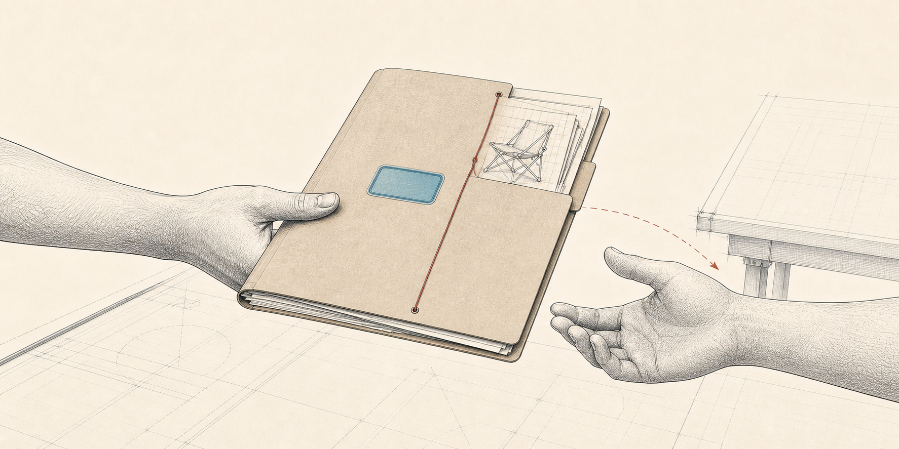
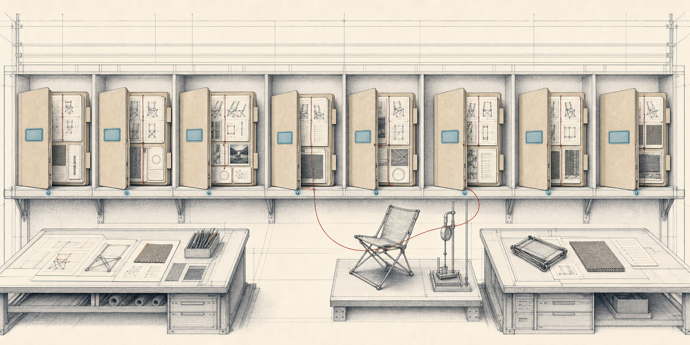
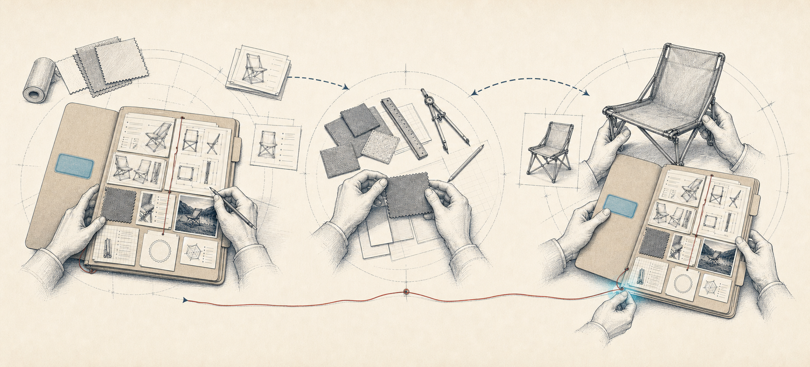

Leadership Brief · S29
The Project Folder,
Made Visible
S29 — this season’s portfolio board
One product. One folder. One visible holder at every moment.

Leadership Brief · S29
S29 — this season’s portfolio board
One product. One folder. One visible holder at every moment.
The design principle
Then · visible possession
Now · shared visibility
We are not going back to paper. We are taking back the one thing paper did better.

Fig. 2 — The folder in motion
Fig. 3 — The full folder with the blank routing label
What S28 taught us
S28 did real work as an evidence archive. The folders are full.
Evidence-rich, command-poor. The work is in the folder; its holder, destination, and date are not reliably on the cover.
Live Innovation S28 board snapshot · 199 open cards · Aug. 2, 2026 · read-only analysis
The master record
The folder moves. The history stays together.
Fig. 4 — Anatomy of the persistent folder
The portfolio view
Where is each product, who is holding it, and what moves it forward — answered without asking anyone.

Fig. 5 — The visible folder wall · Repeat as evidence requires
The operating contract
No new vocabulary. No methodology training. People maintain the visible facts — nothing else.
One Current Action: the single result controlling portfolio progress now.
SECONDARY · TARGET RELEASE / MILESTONE · BLOCKED REASON, IN PLAIN LANGUAGE, WHILE BLOCKED
Fig. 6 — The actionable folder label
The accountable handoff
Setting it on someone’s desk is not a handoff. Neither is moving a card.

Fig. 7 — Westfield development → HengFeng sampling → Westfield review
HengFeng may build the sample, but a named internal owner holds the folder through the request, follow-up, review, and acceptance of what comes back.
The human discipline
| Everyone | Use plain language on the folder. No tokens, jargon, or new ceremonies. |
|---|---|
| Portfolio Owner / PM | Own the product identity, overall accountability, target milestone, and intended path through release. |
| Current Owner | Keep the current result, date, output, open risks, and Blocked Reason true. |
| Next Owner | Take the folder explicitly — one acceptance comment. |
| Development approver | Personally record one decision — APPROVED FOR DEVELOPMENT — at one gate. |
| Leadership — all of us | Run reviews from the board. Correct missing status on the folder, not out loud. |
The last row is the one that decides whether this works.
The agentic layer
The paper office had file clerks and registrars keeping folders moving. The agents absorb that routing and memory burden. People decide.
Fig. 8 — One shelf, three services · The services point and explain; people retain every decision
Agents never invent owners, dates, acceptance, approvals, priorities, or business decisions. The board remains fully usable with every agent switched off.
The decision dividend
Tracking is the floor. The reason to keep the folders true is what they can tell us.
Plans built on observed durations instead of optimistic dates.
Sharper specifications and better tooling conversations.
Capacity choices made before overload becomes visible only through escalation.
A factual balance of work once Innovation Type is populated consistently.
Fig. 9 — The season ledger · measures folders and flow, never people
S30’s board can be designed from S29’s evidence — not only from anecdotes.
This season’s rollout
The sequence
Run reviews from the board. If the folder is wrong, fix the folder.
The first 90-day ledger
Keep the methodology in the background. Expose the decision or action it produces.
Leadership Brief · S29 Portfolio Command · August 2026